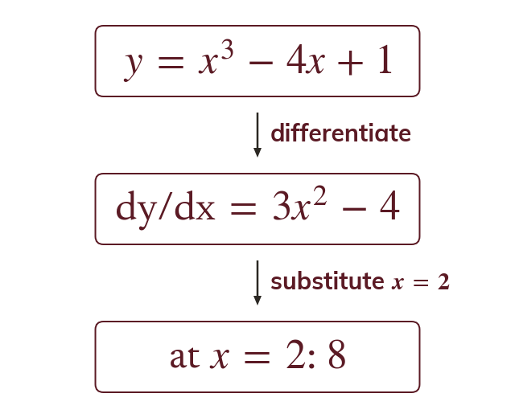
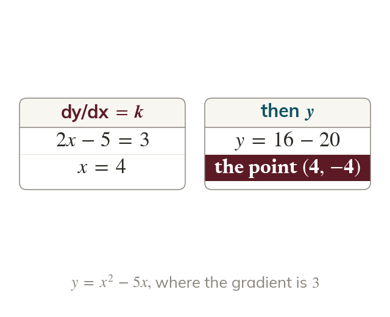
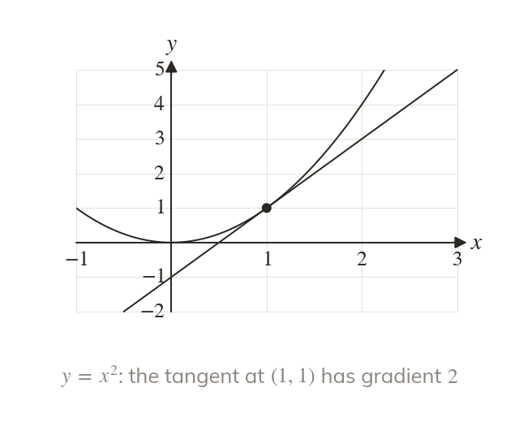
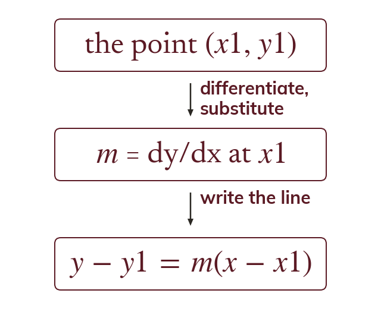

The gradient at a point
The derivative is a formula for the gradient at any x. Substituting one x-value gives the gradient there.
A tangent touches a curve and runs in its direction at one point. Differentiation gives its gradient, and the straight-line work from Chapter gives its equation.
Work down the page at your own pace. Write every answer in your book first, then click to check it.
Read each card, then follow the worked examples one step at a time.

The derivative is a formula for the gradient at any x. Substituting one x-value gives the gradient there.

To find where the gradient is k, dy/dx is set equal to k. The curve's equation then gives each y-coordinate.
Pick an answer. If it's wrong, the feedback tells you which mistake it was.
Section Tangents and normals : the questions finding the gradient at a marked point, and the x-values where a curve has a given gradient.
Read each card, then follow the worked examples one step at a time.

The tangent at a point has the curve's gradient there. So m comes from dy/dx at that x.

The point gives and
The derivative at gives Then gives the tangent.
Pick an answer. If it's wrong, the feedback tells you which mistake it was.
Section Tangents and normals : the tangent equations only. Leave the normals for the next lesson.
Finished? Next lesson: 8.4b-8.5 Normals, Increasing and Decreasing.
Log in, then search for a code to practise that skill.